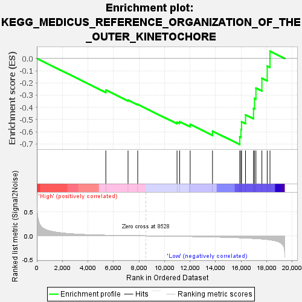
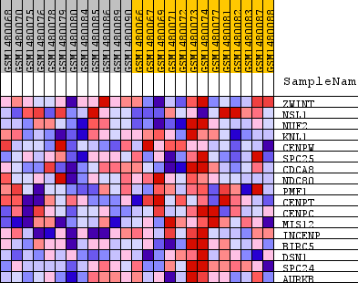
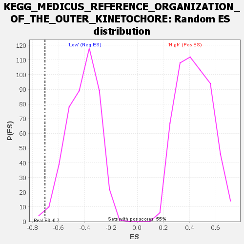

| Dataset | WG6v3.CYGB.cls#High_versus_Low.CYGB.cls#High_versus_Low_repos |
| Phenotype | CYGB.cls#High_versus_Low_repos |
| Upregulated in class | Low |
| GeneSet | KEGG_MEDICUS_REFERENCE_ORGANIZATION_OF_THE_OUTER_KINETOCHORE |
| Enrichment Score (ES) | -0.70459706 |
| Normalized Enrichment Score (NES) | -1.6934661 |
| Nominal p-value | 0.008888889 |
| FDR q-value | 0.59777325 |
| FWER p-Value | 0.464 |

| SYMBOL | TITLE | RANK IN GENE LIST | RANK METRIC SCORE | RUNNING ES | CORE ENRICHMENT | |
|---|---|---|---|---|---|---|
| 1 | ZWINT | ZWINT | 5404 | 0.012 | -0.2584 | No |
| 2 | NSL1 | NSL1 | 7144 | 0.005 | -0.3404 | No |
| 3 | NUF2 | NUF2 | 7901 | 0.002 | -0.3759 | No |
| 4 | KNL1 | KNL1 | 10982 | -0.008 | -0.5212 | No |
| 5 | CENPW | CENPW | 11188 | -0.009 | -0.5170 | No |
| 6 | SPC25 | SPC25 | 12012 | -0.012 | -0.5396 | No |
| 7 | CDCA8 | CDCA8 | 13761 | -0.022 | -0.5947 | No |
| 8 | NDC80 | NDC80 | 15894 | -0.039 | -0.6415 | Yes |
| 9 | PMF1 | PMF1 | 15992 | -0.040 | -0.5815 | Yes |
| 10 | CENPT | CENPT | 16035 | -0.041 | -0.5179 | Yes |
| 11 | CENPC | CENPC | 16347 | -0.044 | -0.4621 | Yes |
| 12 | MIS12 | MIS12 | 16973 | -0.052 | -0.4095 | Yes |
| 13 | INCENP | INCENP | 17049 | -0.054 | -0.3267 | Yes |
| 14 | BIRC5 | BIRC5 | 17163 | -0.056 | -0.2427 | Yes |
| 15 | DSN1 | DSN1 | 17630 | -0.065 | -0.1621 | Yes |
| 16 | SPC24 | SPC24 | 18046 | -0.075 | -0.0625 | Yes |
| 17 | AURKB | AURKB | 18264 | -0.082 | 0.0597 | Yes |

